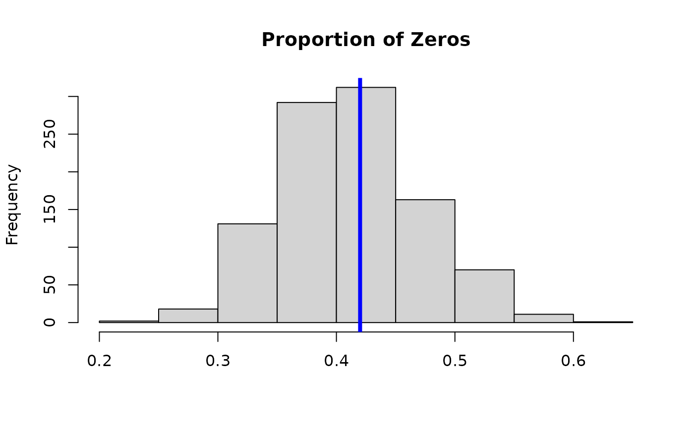

Run the MCMC algorithm for STAR given
a function to initialize model parameters; and
a function to sample (i.e., update) model parameters.
The transformation can be known (e.g., log or sqrt) or unknown (Box-Cox or estimated nonparametrically) for greater flexibility.
Usage
genMCMC_star(
y,
sample_params,
init_params,
transformation = "np",
y_max = Inf,
nsave = 5000,
nburn = 5000,
nskip = 0,
save_y_hat = FALSE,
verbose = TRUE
)Arguments
- y
n x 1vector of observed counts- sample_params
a function that inputs data
yand a named listparamscontainingmu: then x 1vector of conditional means (fitted values)sigma: the conditional standard deviationcoefficients: a named list of parameters that determinemu
and outputs an updated list
paramsof samples from the full conditional posterior distribution ofcoefficientsandsigma(and updatesmu)- init_params
an initializing function that inputs data
yand initializes the named listparamsofmu,sigma, andcoefficients- transformation
transformation to use for the latent data; must be one of
"identity" (identity transformation)
"log" (log transformation)
"sqrt" (square root transformation)
"np" (nonparametric transformation estimated from empirical CDF)
"pois" (transformation for moment-matched marginal Poisson CDF)
"neg-bin" (transformation for moment-matched marginal Negative Binomial CDF)
"box-cox" (box-cox transformation with learned parameter)
- y_max
a fixed and known upper bound for all observations; default is
Inf- nsave
number of MCMC iterations to save
- nburn
number of MCMC iterations to discard
- nskip
number of MCMC iterations to skip between saving iterations, i.e., save every (nskip + 1)th draw
- save_y_hat
logical; if TRUE, compute and save the posterior draws of the expected counts, E(y), which may be slow to compute
- verbose
logical; if TRUE, print time remaining
Value
a list with at least the following elements:
post.pred: draws from the posterior predictive distribution ofypost.sigma: draws from the posterior distribution ofsigmapost.log.like.point: draws of the log-likelihood for each of thenobservationsWAIC: Widely-Applicable/Watanabe-Akaike Information Criterionp_waic: Effective number of parameters based on WAICpost.lambda: draws from the posterior distribution oflambda(NULL unlesstransformation='box-cox')fitted.values: the posterior mean of the conditional expectation of the countsy(NULLifsave_y_hat=FALSE)post.fitted.values: posterior draws of the conditional mean of the countsy(NULLifsave_y_hat=FALSE)
If the coefficients list from init_params and sample_params contains a named element beta,
e.g. for linear regression, then the function output contains
coefficients: the posterior mean of the beta coefficientspost.beta: draws from the posterior distribution ofbetapost.othercoefs: draws from the posterior distribution of any other sampled coefficients, e.g. variance terms
If no beta exists in the parameter coefficients, then the output list just contains
coefficients: the posterior mean of all coefficientspost.beta: draws from the posterior distribution of all coefficients
Additionally, if init_params and sample_params have output mu_test, then the sampler will output
post.predtest, which contains draws from the posterior predictive distribution at test points.
Details
STAR defines a count-valued probability model by (1) specifying a Gaussian model for continuous *latent* data and (2) connecting the latent data to the observed data via a *transformation and rounding* operation.
Posterior and predictive inference is obtained via a Gibbs sampler that combines (i) a latent data augmentation step (like in probit regression) and (ii) an existing sampler for a continuous data model.
There are several options for the transformation. First, the transformation
can belong to the *Box-Cox* family, which includes the known transformations
'identity', 'log', and 'sqrt', as well as a version in which the Box-Cox parameter
is inferred within the MCMC sampler ('box-cox'). Second, the transformation
can be estimated (before model fitting) using the empirical distribution of the
data y. Options in this case include the empirical cumulative
distribution function (CDF), which is fully nonparametric ('np'), or the parametric
alternatives based on Poisson ('pois') or Negative-Binomial ('neg-bin')
distributions. For the parametric distributions, the parameters of the distribution
are estimated using moments (means and variances) of y.
Examples
# Simulate data with count-valued response y:
sim_dat = simulate_nb_lm(n = 100, p = 5)
y = sim_dat$y; X = sim_dat$X
# STAR: log-transformation:
fit_log = genMCMC_star(y = y,
sample_params = function(y, params) sample_lm_gprior(y, X, params),
init_params = function(y) init_lm_gprior(y, X),
transformation = 'log')
#> [1] "Burn-In Period"
#> [1] "0.29 seconds remaining"
#> [1] "0.07 seconds remaining"
#> [1] "Starting sampling"
#> [1] "0.59 seconds remaining"
#> [1] "0.14 seconds remaining"
#> [1] "Total time: 1 seconds"
# Posterior mean of each coefficient:
coef(fit_log)
#> beta1 beta2 beta3 beta4
#> 0.4024203 0.7931272 -0.1351037 -0.2981660
# WAIC for STAR-log:
fit_log$WAIC
#> [1] 336.1432
# MCMC diagnostics:
plot(as.ts(fit_log$post.beta[,1:3]))
# Posterior predictive check:
hist(apply(fit_log$post.pred, 1,
function(x) mean(x==0)), main = 'Proportion of Zeros', xlab='');
abline(v = mean(y==0), lwd=4, col ='blue')
